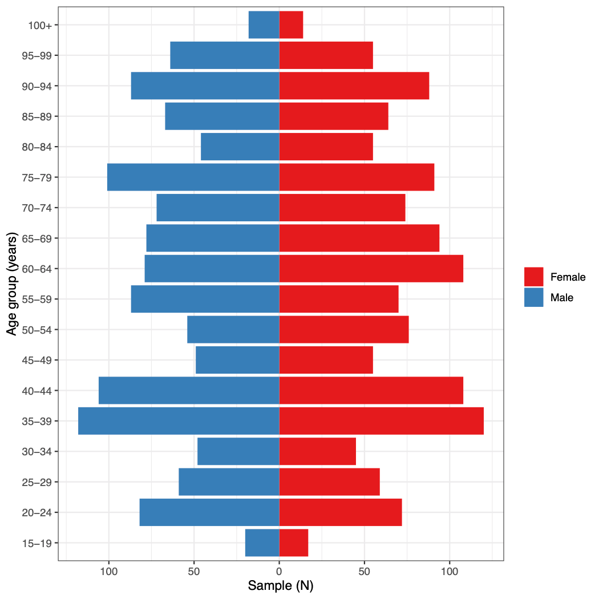
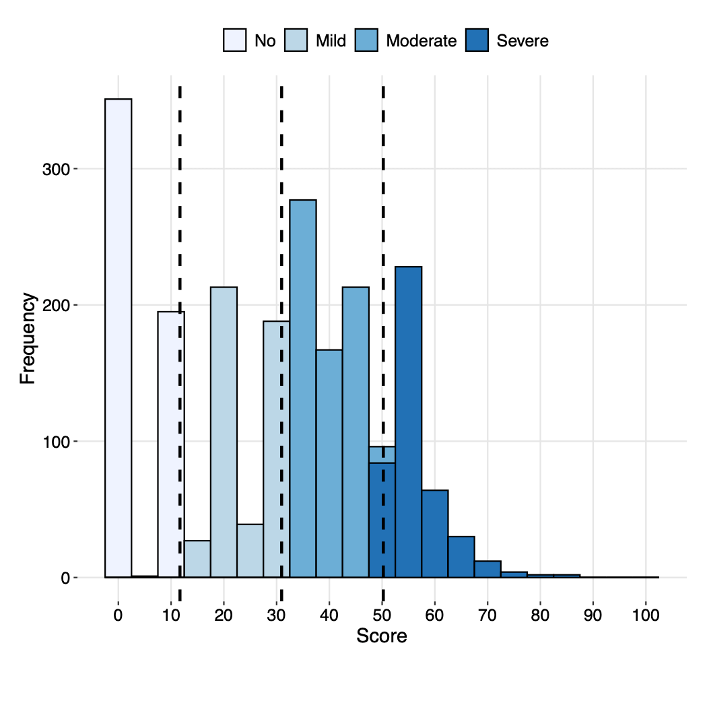
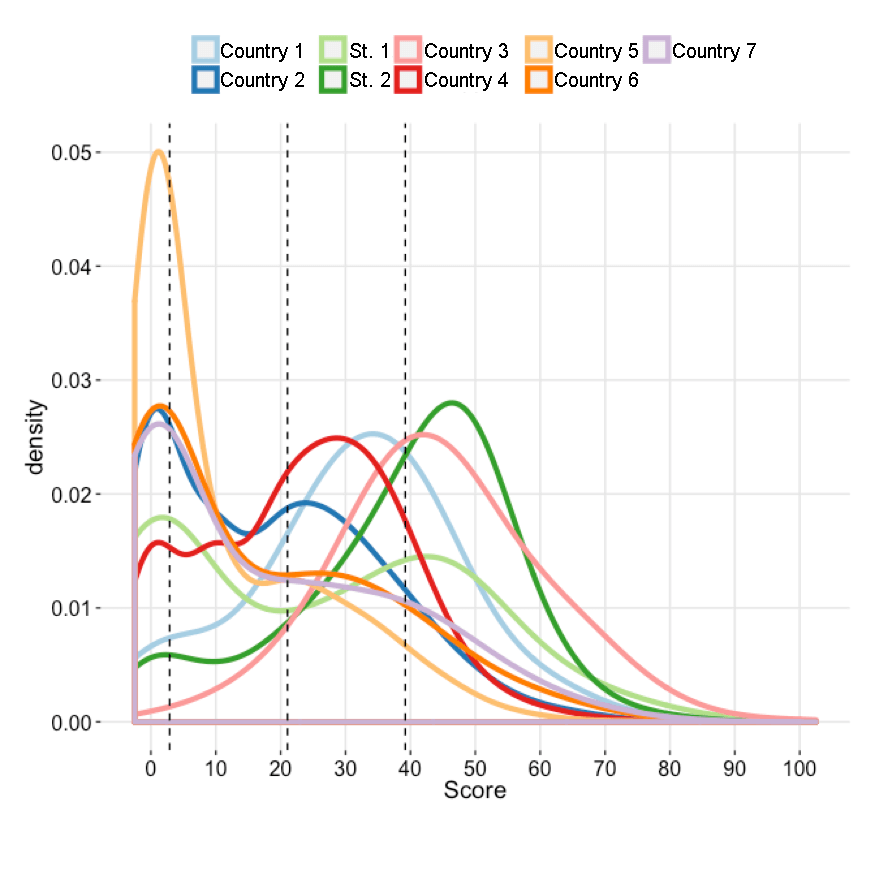

vignettes/c6_after_rasch_EN.Rmd
c6_after_rasch_EN.RmdAfter you have finished with Rasch Analysis, the score is outputted
in the file Data_final.csv in the column called
rescaled. This file will only contain the individuals
included in the analysis. Any individual who had too many missing values
(NA) will not be in this file. It is often advisable to
merge the original data with all individuals with the new scores. Any
individual who did not have a score calculated will have an
NA in this column.
This merge can be accomplished with the following code. First, open
the library called tidyverse to access the necessary
functions. Next, read in the Data_final.csv file and select
only the columns you need: ID (or whatever the name of the
individual ID column is in your data) and rescaled. The
code below assumes that the file is in your working directory. You will
have to include the full path to the file if it is not currently in your
working directory. Finally, you can create an object
merged_data that merges your original data, here
represented with the object original_data, with the new
score in a column renamed to "DisabilityScore" with the
following code:
library(tidyverse)
new_score <- read_csv("Data_final.csv") %>%
select(c("ID", "rescaled"))
merged_data <- original_data %>%
left_join(new_score) %>%
rename("DisabilityScore" = "rescaled")The sample data included in the whomds package called
df_adults already has a Rasch score merged with it, in the
column disability_score.
After calculating the disability scores using Rasch Analysis, you are
now ready to analyze the results of the survey by calculating
descriptive statistics. The whomds package contains
functions to create tables and figures of descriptive statistics. This
section will go over these functions.
Descriptive statistics functions included in the whomds
package are:
table_weightedpct() - produces weighted tables of N or
%table_unweightedpctn() - produces unweighted tables of
N and %table_basicstats() - computes basic statistics of the
number of members per group per household.The arguments of each of these codes will be described below.
table_weightedpct()
whomds contains a function called
table_weightedpct() which calculates weighted results
tables from the survey, disaggregated by specified variables. The
arguments of this function are passed to functions in the package
dplyr.
Below are the arguments of the function:
df - the data frame with all the variables of
interestvars_ids - variable names of the survey cluster
idsvars_strata - variable names of the survey stratavars_weights - variable names of the weightsformula_vars - vector of the column names of variables
you would like to print results for... - captures expressions for filtering or transmuting
the data. See the description of the argument willfilter
below for more detailsformula_vars_levels - numeric vector of the factor
levels of the variables in formula_vars. By default, the
function assumes the variables have two levels: 0 and 1by_vars - the variables to disaggregate bypct - a logical variable indicating whether or not to
calculate weighted percentages. Default is TRUE for
weighted percentages. Set to FALSE for weighted N.willfilter - a variable that tells the function whether
or not to filter the data by a particular value.
formula_vars have response options
of 0 and 1 but you only want to show the values for 1, then you would
say willfilter = TRUE. Then at the end of your argument
list you write an expression for the filter. In this case, you would say
resp==1.willfilter = FALSE, then the function will
assume you want to “transmute” the data, in other words manipulate the
columns in some way, which for us often means to collapse response
options. For example, if your formula_vars have 5 response
options, but you only want to show results for the sum of options
"Agree" and "StronglyAgree", (after setting
spread_key="resp" to spread the table by the response
options) you could set willfilter=FALSE, and then directly
after write the expression for the transmutation, giving it a new column
name–in this case the expression would be
NewColName=Agree+AgreeStrongly. Also write the names of the
other columns you would like to keep in the final table.willfilter as its default of
NULL, then the function will not filter or transmute
data.add_totals - a logical variable determining whether to
create total rows or columns (as appropriate) that demonstrate the
margin that sums to 100. Keep as the default FALSE to not
include totals.spread_key - the variable to spread the table
horizontally by. Keep as the default NULL to not spread the
table horizontally.spread_value - the variable to fill the table with
after a horizontal spread. By default this argument is
"prop", which is a value created internally by the
function, and generally does not need to be changed.arrange_vars - the list of variables to arrange the
table by. Keep as default NULL to leave the arrangement as
is.include_SE - a logical variable indicating whether to
include the standard errors in the table. Keep as the default
FALSE to not include standard errors. As of this version of
whomds, does not work when adding totals
(add_totals is TRUE), spreading
(spread_key is not NULL) or transmutting
(willfilter is FALSE).Here are some examples of how table_weightedpct() would
be used in practice. Not all arguments are explicitly set in each
example, which means they are kept as their default values.
Let’s say we want to print a table of the percentage of people in
each disability level who gave each response option for a set of
questions about the general environment. We would set the arguments of
table_weightedpct() like this, and the first few rows of
the table would look like this:
#Remove NAs from column used for argument by_vars
df_adults_noNA <- df_adults %>%
filter(!is.na(disability_cat))
table_weightedpct(
df = df_adults_noNA,
vars_ids = "PSU",
vars_strata = "strata",
vars_weights = "weight",
formula_vars = paste0("EF", 1:12),
formula_vars_levels = 1:5,
by_vars = "disability_cat",
spread_key = NULL,
spread_value = "prop",
arrange_vars = NULL,
willfilter = NULL
)
#> # A tibble: 236 × 4
#> # Groups: disability_cat, item [48]
#> disability_cat item resp prop
#> <ord> <ord> <fct> <dbl>
#> 1 No EF1 1 42.1
#> 2 No EF1 2 15.8
#> 3 No EF1 3 15.2
#> 4 No EF1 4 12.4
#> 5 No EF1 5 14.6
#> 6 No EF10 1 44.2
#> 7 No EF10 2 10.5
#> 8 No EF10 3 22.8
#> 9 No EF10 4 11.6
#> 10 No EF10 5 10.9
#> # ℹ 226 more rowsThe outputted table has 4 columns: the variable we disaggregated the
data by (disability_cat, in other words the disability
level), the item (item), the response option
(resp), and the proportion (prop).
This long table from the above example is great for data analysis,
but not great for reading with the bare eye. If we want to make it
nicer, we convert it to “wide format” by “spreading” by a particular
variable. Perhaps we want to spread by disability_cat. Our
call to table_weightedpct() would now look like this, and
the outputted table would be:
table_weightedpct(
df = df_adults_noNA,
vars_ids = "PSU",
vars_strata = "strata",
vars_weights = "weight",
formula_vars = paste0("EF", 1:12),
formula_vars_levels = 1:5,
by_vars = "disability_cat",
spread_key = "disability_cat",
spread_value = "prop",
arrange_vars = NULL,
willfilter = NULL
)
#> # A tibble: 60 × 6
#> # Groups: item [12]
#> item resp No Mild Moderate Severe
#> <ord> <fct> <dbl> <dbl> <dbl> <dbl>
#> 1 EF1 1 42.1 47.5 43.4 46.6
#> 2 EF1 2 15.8 15.3 17.2 11.9
#> 3 EF1 3 15.2 14.2 14.3 15.0
#> 4 EF1 4 12.4 9.62 11.2 10.4
#> 5 EF1 5 14.6 13.3 13.8 16.1
#> 6 EF10 1 44.2 49.9 49.3 49.7
#> 7 EF10 2 10.5 12.6 10.3 9.84
#> 8 EF10 3 22.8 16.0 18.4 17.2
#> 9 EF10 4 11.6 11.9 14.6 13.3
#> 10 EF10 5 10.9 9.64 7.40 9.87
#> # ℹ 50 more rowsNow we can see our prop column has been spread
horizontally for each level of disability_cat.
Perhaps, though, we are only interested in the proportions of the
most extreme response option of 5. We could now add a filter to our call
to table_weightedpct() like so:
table_weightedpct(
df = df_adults_noNA,
vars_ids = "PSU",
vars_strata = "strata",
vars_weights = "weight",
formula_vars = paste0("EF", 1:12),
formula_vars_levels = 1:5,
by_vars = "disability_cat",
spread_key = "disability_cat",
spread_value = "prop",
arrange_vars = NULL,
willfilter = TRUE,
resp == 5
)
#> # A tibble: 12 × 6
#> # Groups: item [12]
#> item resp No Mild Moderate Severe
#> <ord> <fct> <dbl> <dbl> <dbl> <dbl>
#> 1 EF1 5 14.6 13.3 13.8 16.1
#> 2 EF10 5 10.9 9.64 7.40 9.87
#> 3 EF11 5 1.75 0.974 2.27 1.75
#> 4 EF12 5 4.38 NA NA NA
#> 5 EF2 5 5.55 5.29 5.13 6.25
#> 6 EF3 5 4.85 5.40 3.69 5.16
#> 7 EF4 5 2.73 2.47 3.40 3.35
#> 8 EF5 5 10.4 13.4 8.80 11.2
#> 9 EF6 5 4.08 3.08 1.96 2.56
#> 10 EF7 5 4.29 3.28 2.72 4.68
#> 11 EF8 5 2.28 1.29 1.19 2.41
#> 12 EF9 5 5.20 3.59 4.89 5.26Now you can see only the proportions for the response option of 5 are given.
With table_weightedpct(), we can also add more levels of
disaggregation by editing the argument by_vars. Here we
will produce the same table as in Example 3 above but now disaggregated
by disability level and sex:
table_weightedpct(
df = df_adults_noNA,
vars_ids = "PSU",
vars_strata = "strata",
vars_weights = "weight",
formula_vars = paste0("EF", 1:12),
formula_vars_levels = 1:5,
by_vars = c("disability_cat", "sex"),
spread_key = "disability_cat",
spread_value = "prop",
arrange_vars = NULL,
willfilter = TRUE,
resp == 5
)
#> # A tibble: 24 × 7
#> # Groups: sex, item [24]
#> sex item resp No Mild Moderate Severe
#> <fct> <ord> <fct> <dbl> <dbl> <dbl> <dbl>
#> 1 Female EF1 5 13.2 14.7 13.1 15.4
#> 2 Female EF10 5 11.1 9.91 6.41 9.62
#> 3 Female EF11 5 1.15 1.24 2.26 2.57
#> 4 Female EF12 5 3.60 NA NA NA
#> 5 Female EF2 5 7.44 6.21 6.18 6.94
#> 6 Female EF3 5 4.60 6.32 4.02 4.62
#> 7 Female EF4 5 3.19 3.20 3.00 2.34
#> 8 Female EF5 5 8.61 13.1 9.77 10.3
#> 9 Female EF6 5 3.25 3.76 2.29 2.89
#> 10 Female EF7 5 4.44 4.12 2.76 2.34
#> # ℹ 14 more rowsPerhaps we are still interested not only in response option 5, but
the sum of 4 and 5 together. We can do this by “transmuting” our table.
To do this, we first choose to “spread” by resp by setting
spread_key="resp". This will convert the table to a wide
format as in Example 2, but now each column will represent a response
option. Then we set the transmutation by setting
willfilter=FALSE, and adding expressions for the
transmutation on the next line. We name all the columns we would like to
keep and give an expression for how to create the new column of the sum
of proportions for response options 4 and 5, here called
problems:
table_weightedpct(
df = df_adults_noNA,
vars_ids = "PSU",
vars_strata = "strata",
vars_weights = "weight",
formula_vars = paste0("EF", 1:12),
formula_vars_levels = 1:5,
by_vars = c("disability_cat", "sex"),
spread_key = "resp",
spread_value = "prop",
arrange_vars = NULL,
willfilter = FALSE,
disability_cat, sex, item, problems = `4`+`5`
)
#> # A tibble: 96 × 4
#> # Groups: disability_cat, sex, item [96]
#> disability_cat sex item problems
#> <ord> <fct> <ord> <dbl>
#> 1 No Female EF1 27.2
#> 2 No Female EF10 21.6
#> 3 No Female EF11 6.44
#> 4 No Female EF12 6.69
#> 5 No Female EF2 11.6
#> 6 No Female EF3 8.53
#> 7 No Female EF4 5.96
#> 8 No Female EF5 18.5
#> 9 No Female EF6 8.12
#> 10 No Female EF7 11.1
#> # ℹ 86 more rowsIf we would like to modify the table again so that
disability_cat represents the columns again, we can feed
this table into another function that will perform the pivot The
function to pivot tables is called pivot_wider(), and it is
in the tidyr package. To perform a second pivot, write the
code like this:
table_weightedpct(
df = df_adults_noNA,
vars_ids = "PSU",
vars_strata = "strata",
vars_weights = "weight",
formula_vars = paste0("EF", 1:12),
formula_vars_levels = 1:5,
by_vars = c("disability_cat", "sex"),
spread_key = "resp",
spread_value = "prop",
arrange_vars = NULL,
willfilter = FALSE,
disability_cat, sex, item, problems = `4`+`5`
) %>%
pivot_wider(names_from = disability_cat, values_from = problems)
#> # A tibble: 24 × 6
#> # Groups: sex, item [24]
#> sex item No Mild Moderate Severe
#> <fct> <ord> <dbl> <dbl> <dbl> <dbl>
#> 1 Female EF1 27.2 25.0 22.2 25.2
#> 2 Female EF10 21.6 19.7 22.6 20.6
#> 3 Female EF11 6.44 5.19 5.98 8.61
#> 4 Female EF12 6.69 NA NA NA
#> 5 Female EF2 11.6 11.2 11.4 13.8
#> 6 Female EF3 8.53 11.6 7.00 9.36
#> 7 Female EF4 5.96 4.69 6.35 4.37
#> 8 Female EF5 18.5 24.3 17.8 21.8
#> 9 Female EF6 8.12 8.72 5.06 5.33
#> 10 Female EF7 11.1 7.58 9.06 8.69
#> # ℹ 14 more rowsThe names_from argument of the function
pivot_wider() tells R which variable to use as
the columns, and values_from tells R what to
fill the columns with. The operator %>% is commonly
referred to as a “pipe”. It feeds the object before it into the first
argument of the function after it. For example, if you have an object
x and a function f, writing
x %>% f() would be the equivalent as writing
f(x). People use “pipes” because they make long sequences
of code easier to read.
table_unweightedpctn()
whomds contains a function called
table_unweightedpctn() that produces unweighted tables of N
and %. This is generally used for demographic tables. Its arguments are
as follows:
df - the data frame with all the variables of
interestvars_demo - vector with the names of the demographic
variables for which the N and % will be calculatedgroup_by_var - name of the variable in which the
statistics should be stratified
(e.g. "disability_cat")spread_by_group_by_var - logical determining whether to
spread the table by the variable given in group_by_var.
Default is FALSE.group_by_var_sums_to_100 - logical determining whether
percentages sum to 100 along the margin of group_by_var, if
applicable. Default is FALSE.add_totals - a logical variable determining whether to
create total rows or columns (as appropriate) that demonstrate the
margin that sums to 100. Keep as the default FALSE to not
include totals.Here is an example of how it is used:
table_unweightedpctn(df_adults_noNA,
vars_demo = c("sex", "age_cat", "work_cat", "edu_cat"),
group_by_var = "disability_cat",
spread_by_group_by_var = TRUE)
#> # A tibble: 12 × 10
#> item demo No_pct No_n Mild_pct Mild_n Moderate_pct Moderate_n Severe_pct
#> <chr> <ord> <dbl> <dbl> <dbl> <dbl> <dbl> <dbl> <dbl>
#> 1 sex Fema… 52.5 287 53.5 250 49.9 376 49.1
#> 2 sex Male 47.5 260 46.5 217 50.1 377 50.9
#> 3 age_cat 18-24 6.9 38 7.3 34 8.8 66 7.7
#> 4 age_cat 25-39 19.7 108 16.1 75 19.7 148 16.4
#> 5 age_cat 40-64 32.4 177 33.2 155 29.3 221 32.6
#> 6 age_cat 64-1… 41 224 43.5 203 42.2 318 43.2
#> 7 work_c… N 41.7 228 40.5 189 42 316 42.3
#> 8 work_c… Y 58.3 319 59.5 278 58 437 57.7
#> 9 edu_cat None 21.8 119 16.7 78 21.4 161 19
#> 10 edu_cat Elem… 37.8 207 38.8 181 39.7 299 41.3
#> 11 edu_cat Seco… 25 137 28.7 134 23.2 175 25.1
#> 12 edu_cat Univ… 15.4 84 15.8 74 15.7 118 14.6
#> # ℹ 1 more variable: Severe_n <dbl>table_basicstats()
The function table_basicstats() computes basic
statistics of the number of member per group per household. Its
arguments are:
df - a data frame of household data where the rows
represent members of the households in the samplehh_id - string (length 1) indicating the name of the
variable in df uniquely identifying householdsgroup_by_var - string (length 1) with name of variable
in df to group results byHere is an example of how it is used:
table_basicstats(df_adults_noNA, "HHID", "age_cat")
#> # A tibble: 5 × 4
#> age_cat mean_sd median range
#> <chr> <chr> <dbl> <chr>
#> 1 18-24 0.1 (0.3) 0 0 - 1
#> 2 25-39 0.2 (0.4) 0 0 - 1
#> 3 40-64 0.3 (0.5) 0 0 - 1
#> 4 64-100 0.4 (0.5) 0 0 - 1
#> 5 Total 1 (0) 1 1 - 1Descriptive statistics figure functions included in the
whomds package are:
fig_poppyramid() - produces a population pyramid figure
for the samplefig_dist() - produces a plot of the distribution of a
scorefig_density() - produces a plot of the density of a
scoreThe arguments of each of these codes will be described below.
fig_poppyramid()
whomds contains a function called
fig_poppyramid() that produces a population pyramid figure
for the sample. This function takes as arguments:
df - the data where each row is a member of the
household from the household rostervar_age - the name of the column in df
with the persons’ agesvar_sex - the name of the column in df
with he persons’ sexesx_axis - a string indicating whether to use absolute
numbers or sample percentage on the x-axis. Choices are "n"
(default) or "pct".age_plus - a numeric value indicating the age that is
the first value of the oldest age group. Default is 100, for the last
age group to be 100+age_by - a numeric value indicating the width of each
age group, in years. Default is 5.Running this function produces a figure like the one below:

fig_dist()
whomds contains a function called
fig_dist() that produces a plot of the distribution of a
score. WHO uses this function to show the distribution of the disability
scores calculated with Rasch Analysis. Its arguments are:
df - data frame with the score of interestscore - character variable of score variable name
ranging from 0 to 100; ex. "disability_score"
score_cat - character variable of score categorization
variable name, ex. "disability_cat"
cutoffs - a numeric vector of the cut-offs for the
score categorizationx_lab - a string giving the x-axis label. Default is
"Score"
y_max - maximum value to use on the y-axis. If left as
the default NULL, the function will calculate a suitable
maximum automatically.pcent - logical variable indicating whether to use
percent on the y-axis or frequency. Leave as default FALSE
for frequency and give TRUE for percent.pal - a string specifying the type of color palette to
use, passed to the function RColorBrewer::brewer.pal().
Default is "Blues".binwidth - a numeric value giving the width of the bins
in the histograph. Default is 5.Running this function produces a figure like the one below.

fig_density()
whomds contains a function similar to
fig_dist() called fig_density() that produces
a plot of the density of a score. WHO uses this function to show the
density distribution of the disability scores calculated with Rasch
Analysis. Its arguments are:
df - data frame with the score of interestscore - character variable of score variable name
ranging from 0 to 100; ex. "disability_score"
var_color - a character variable of the column name to
set color of density lines by. Use this variable if you could like to
print the densities of different groups onto the same plot. Default is
NULL.var_facet - a character variable of the column name for
the variable to create a ggplot2::facet_grid() with, which
will plot densities of different groups in side-by-side plots. Default
is NULL.cutoffs - a numeric vector of the cut-offs for the
score categorizationx_lab - a string giving the x-axis label. Default is
"Score"
pal - a string specifying either a manual color to use
for the color aesthetic, a character vector explictly specifying the
colors to use for the color scale, or as the name of a palette to pass
to RColorBrewer::brewer.pal() with the name of the color
palette to use for the color scale. Default is
"Paired"
adjust - a numeric value to pass to adjust
argument of ggplot2::geom_density(), which controls
smoothing of the density function. Default is 2.size - a numeric value to pass to size
argument of ggplot2::geom_density(), which controls the
thickness of the lines. Default is 1.5.Running this function produces a figure like the one below.
